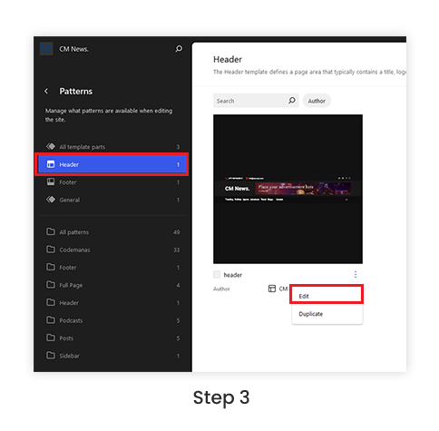
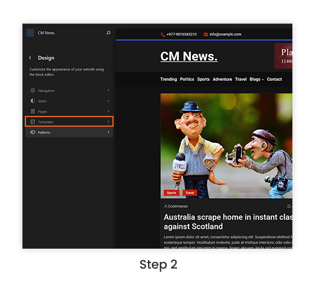
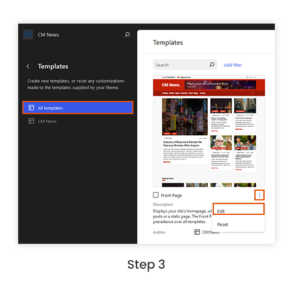

CM News Pro Docs
Introduction
CM News Pro is a versatile and contemporary WordPress block theme tailored for news websites, featuring a clean, minimalist layout that highlights your content. With customizable blocks and intuitive drag-and-drop functionality, it allows for easy personalization and dynamic content arrangements. The theme is fully responsive, ensuring an optimal viewing experience on all devices, and includes built-in support for multimedia, social media integration, and SEO optimization to enhance your site's reach and engagement.
Installation
Manual Installation
If automatic installation is not possible, go to [ https://wordpress.org/themes/cm-news/ ] and you will see the download button. Clicking download button will provide you with a zip file of the theme.
- Go to Appearance > Themes > Add New Theme and click upload Theme.
- Click upload theme and then add the zip file.
- The theme will then be installed, then activate the theme.
Site Editor
The WordPress Site Editor introduces a new method for creating stunning websites directly within WordPress, eliminating the need for additional page builders. Utilizing blocks, patterns, and a comprehensive set of drag-and-drop design tools, users can effortlessly build pages.
This interface is designed to be user-friendly for individuals of all skill levels, enabling them to craft professional-looking websites with ease. Whether you are creating a blog, a marketing site, or a portfolio, the Site Editor offers the flexibility and customization needed.
To start editing your site with the Site Editor, navigate to Appearance → Editor. From here, you can design and modify templates, set up menus, and personalize your website’s styles, color palette, typography, block styles and more.
To edit templates and sections navigates to the following. Learn more about the Side Editor see official documentation here
Appereance → Editor → Templates
Edit Header/Footer
Header and footer can be edited globally in WordPress. To Edit your header/footer follow the following steps
Appearance → Editor → Patterns → Header/Footer

Step 1:Go to the WordPress dashboard, select the Editor tab under Appearance.

Step 2:Navigate to the patterns tab by selecting it from the menu's left-hand side.

Step 3:To modify, click the edit button and choose the heading on the left.
CM News Pro Style Variation and Palette

In WordPress, Style Variations are predefined set of design. On block theme it is found under styles/ folder. Clicking each style variation will allow you to see live preview of the theme. Clicking save buttons allow you to save the changes in the theme.
CM News Pro Style Variation
CM News Pro theme offers diverse style options to effortlessly transform your WordPress site. Choose from predefined color variations to jumpstart your palette or opt for combinations of colors and typography for a more distinctive look. These variations provide quick and easy ways to enhance the visual appeal and character of your website.
- Color Variation: Default, Blackwhite, Bluefine, Ceruleanblue, Knightdark, Myrtlegreen, Purplecage
- Fonts used: Roboto, Poppins
Here, you’ll see a visual design representation of each style variation in the theme. To change the style variation navigate to:
Appereance → Editor → Styles
These are the color variation available in our theme


To learn more about the style variation follow official documentation about style variation here
Global Styles
Global Styles is the central hub within the Site Editor where users have the ability to customize all aspects of their website's appearance. From typography choices to button colors, link styles, and layout presets, Global Styles offers a comprehensive toolkit for refining the visual identity of your site.
This feature streamlines the design process by enabling users to make widespread style adjustments efficiently, rather than editing each element separately. By utilizing Global Styles, website owners can establish a cohesive and polished look that reflects their brand's personality and professionalism with minimal effort.
With Global Styles, maintaining consistency across all web pages becomes effortless. Instead of manually tweaking individual design elements, users can set universal parameters that instantly apply across the entire site. This ensures that fonts, colors, and layout defaults remain uniform, promoting a seamless user experience.
Appereance → Editor → Styles

Click Here to learn more abut the Global Styles
Front Page Customization
CM News Pro allows users to customize the front page. Take the following actions to customize the home page:
- After entering the WordPress Dashboard, select the Appearance tab and then select the Editor.
- Next, select the Templates tab, where you can view the many templates that are compatible with our theme.
- To make changes, click the three vertical dots in the Frontpage template's lower right corner.
We have seven sections in Frontpage, which include the Header and Footer.
How to Edit Front Page?
To Edit Frontpage follow the following steps:
Step 1: Go to the WordPress dashboard, select the Editor tab under Appearance.

Step 2: Navigate to the template tab by selecting it from the menu's left-hand side.

Step 3: To make changes to the frontpage template, click the edit button that shows up when you click the three dots in the lower right corner of the template.
How to Edit Front Page Section?
Suppose you want to list news of another category in the homepage's hero section. To achieve it follow the below steps:
Appereance → Editor → Templates → Edit Frontpage Template
- First of all select the query loop block.
- Next, the block panel shows up on the dashboard's right side.
- To add category click the plus symbol and add the category. The visualization is shown in the image below:
How to make sticky Header?
CM Blog theme allows you to make header sticky globally. In order to use this feature you have to download the latest version of CM Blocks plugin.
First, open the Site Editor by going to the WordPress admin, Appearance > Editor. Choose the template you want to edit, and click on the edit button to edit the template. Then, follow the steps given below:
- First select the header template from the List view.
- Select and drag the header template part inside the new group. Make the header full-width.
- Select the group block and open the position panel. Select the “Sticky” option.
Remember to update every template where you want to make sticky header.
Search with Typesense
Search with Typesense is a modern, privacy-friendly, open source search engine built from the ground up using cutting-edge search algorithms, that take advantage of the latest advances in hardware capabilities.
Search with Typesense has been integrated with CM News Theme to enhance your news search experience with its rapid search and autocomplete features. Click here to access the plugin repository, or use the WordPress plugin directory to get Search with Typesense.
To get started and configure, Search with Typesense, follow the detailed official guide here.
CM News Pro is fully compatible is Search with Typesense. You can check out the live demo of the integration here:
CM News Pro with Autocomplete CM News Pro with Instant Search
Multiple Patterns and features
More patterns are available in Cm News Pro than in the free edition of the cm news. The cm news pro includes several patterns, such as Scroll to top, Content Overlay Patterns, and Ticker Patterns, among other things.
Scroll to top features
To implement scroll to top there are two ways. One is simply put a button on the bottom of footer and apply the cm-news-pro-scroll-to-top-button class to it to enable the scroll to top capabilities. And another one is by navigating to the pattern inserter tab which is left to the section navigator block on the left
Ticker Patterns
A "ticker" on a news site is a scrolling or continuously updating display that shows the latest headlines, stock prices, or other real-time information.
There are two methods for inserting Ticker Patterns. One is by inserting the Query Loop Block and Selecting Choose Button. And another one is by navigating to the pattern inserter tab which is left to the section navigator block on the left
Demos Option
There are five different demos available for CM News Pro theme. The Demos include the following:
How to Import Demo Data?
With just a single click, you can effortlessly import demo data into CM News Pro. This feature allows you to quickly populate your website with sample content, giving you a clear preview of how your site will look and function. By loading demo data, you can explore various design elements, layout options, and content formats without having to create content from scratch.
To import demo data Navigate to Import Demo Data which is under the Appearance as shown in the image above.
Appearance → Import Demo Data
How to Activate Licence?
Once the theme is activated, you need to activate the License Key. After purchasing the theme, you'll receive a license email in your inbox. Activating the license is essential for accessing future updates and developments for the theme.
To Activate Licence navigate to Theme Licence which is under the Appearance as shown in the image above.
Appearance → Theme Licence
Setup Video for CM News Pro
The setup video below includes all the previously mentioned demonstrations for the theme's installation, demo import, and theme license setup.